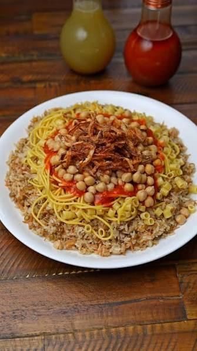
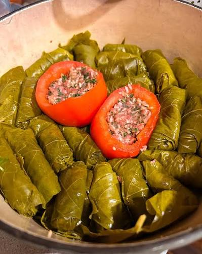

MY favorite food in Egyot
Koshari
Koshari is one of the most famous traditional Egyptian foods. It is a delicious and popular meal that many people in Egypt enjoy. Koshari is made from rice, lentils, pasta, chickpeas, and fried onions. It is usually served with tomato sauce and sometimes spicy sauce. Koshari is a simple and affordable meal, but it is also very tasty and filling. Many tourists try koshari when they visit Egypt because it is an important part of Egyptian food culture. In conclusion, koshari is a special Egyptian dish that represents our culture and traditions.

foul & Taameya
Foul and taameya are two of the most famous traditional Egyptian foods. They are very popular in Egypt and are often eaten for breakfast. Foul is made from cooked fava beans and is usually served with oil, lemon, and spices. Taameya is made from ground fava beans mixed with herbs and spices, then cooked until it becomes crispy. Foul and taameya are delicious and are an important part of Egyptian food culture. Many tourists try them when they visit Egypt. In conclusion, foul and taameya are simple, delicious, and traditional Egyptian foods.

Mahshi
Mahshi is a famous traditional Egyptian food. It is very popular in Egypt and is loved by many people. Mahshi is made by stuffing vegetables such as zucchini, peppers, eggplant, or cabbage with rice, herbs, and spices. It is cooked with tomato sauce and has a delicious taste. Mahshi is often served at family gatherings and special occasions. It is an important part of Egyptian food culture. In conclusion, Mahshi is a delicious and traditional Egyptian dish that represents the rich Egyptian cuisine.
